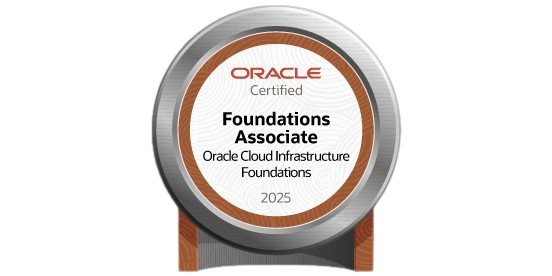

Mis estudios
Mis estudios
¡Qué bien, estás aquí!
En esta sección muestro mi ruta de aprendizaje en el área de la tecnología, con estudios de pregrado, o cursos complementarios, los verás a continuación:
 Institución: Servicio Nacional de Aprendizaje SENA
Institución: Servicio Nacional de Aprendizaje SENA
Programa: Análisis y Desarrollo de Software
Tipo de programa: Tecnólogo
Estado: Certificado
Logros:
- Ingeniería de requisitos
- Maquetación y estructuración de propuestas según requisitos
- Metodologías ágiles: Scrum
- Manejo de bases de datos relacionales y no relacionales
- Fundamentos de lenguajes back-end: PHP y front-end: Html, Css y JavaScript
- Fundamentos de versionamiento y repositorios local: Git y remoto: GitHub
- Construcción de solución de software según requisitos técnicos
- Institución: Alura Latam - ONE Oracle Next Education
Programa: Data Science (Ciencia de Datos)
Tipo de programa: Especialización Tecnológica
Estado: Certificado
Logros:
-
 Programación con JavaScript
Programación con JavaScript- Funciones y Listas
-
- Fundamentos Git y GitHub: repositorio, commit y versiones
-
- ChatGpt: Optimizando la calidad de resultados
-
- Ambiente de desarrollo: VS Code, estructura de archivos y tags
- Clases, posicionamiento y Flex Box
- Header, Footer y variables Css
- Responsividad y publicación de proyectos
-
- Aprender a aprender: técnica para el auto desarrollo
- LinkeIn: has que tu perfíl trabaje por ti
- Foco: enfocarte trae más resultados
- Hábitos: Ser productivo para cumplir las metas personales
-
- Desarrollo de carrera: demanda del mercado
- Propósito profesional: ser el protagonista de tu carrera
- Transición de carrera: una gúia al campo de la tecnología
- Fundamentos de agilidad: Primeros pasos para la transformación ágil
- Emprendimiento: De la idea al plan de negocios
-
- NumPy: análisis numérico eficiente con Python
- Pandas: Conociendo la biblioteca
- Pandas E/S: trabajando con diferentes formatos de archivo
- Pandas: transformación y manipulación de datos
- Visualización de datos: creando gráficos con bibliotecas de Python
- IA aplicada a la ciencia de datos: uso de la IA en la construcción de visualización de datos
-
- Python para Data Science: primeros pasos
- Python para Data Science: Trabajar con funciones, estructuras de datos y excepciones
- Modelado de bases de datos: entidades, relaciones y atributos
- Modelado de bases de datos relacionales: modelado lógico y físico
-
- Estadística con Python: frecuencias y medidas
- Estadística con Python: Probabilidad y muestreo
- Data Science: probando relaciones con regresión líneal
- Regresión Lineal: Técnicas Avanzadas de Modelado
- Clasificación: aprendiendo a clasificar datos con Machine Learning
- Clasificación: validación de modelos y métricas de evaluación
- IA aumentada: previsión de atrasos de vuelos
-
- Institución: Alura Latam - ONE Oracle Next Education
Programa: Ruta Hacia Certificación OCI Foundations Associate -ONE
Tipo de programa: Certificación Tecnológica
Estado: En proceso
Logros:
-
- Linux: Conociendo y uso de terminal
- Redes: Introducción, Conceptos y Práctica
-
- Certificación Oracle Cloud Infraestructure: fundamentos clave y servicios escenciales
- Certificación Oracle Cloud Infraestructure: gestión de datos, seguridad y gobernanza
-
Certificaciones:
